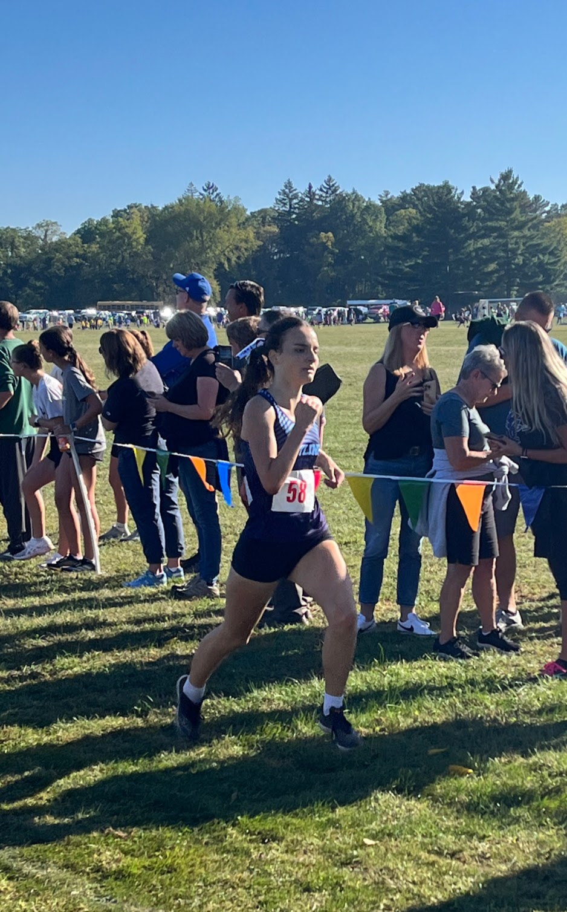
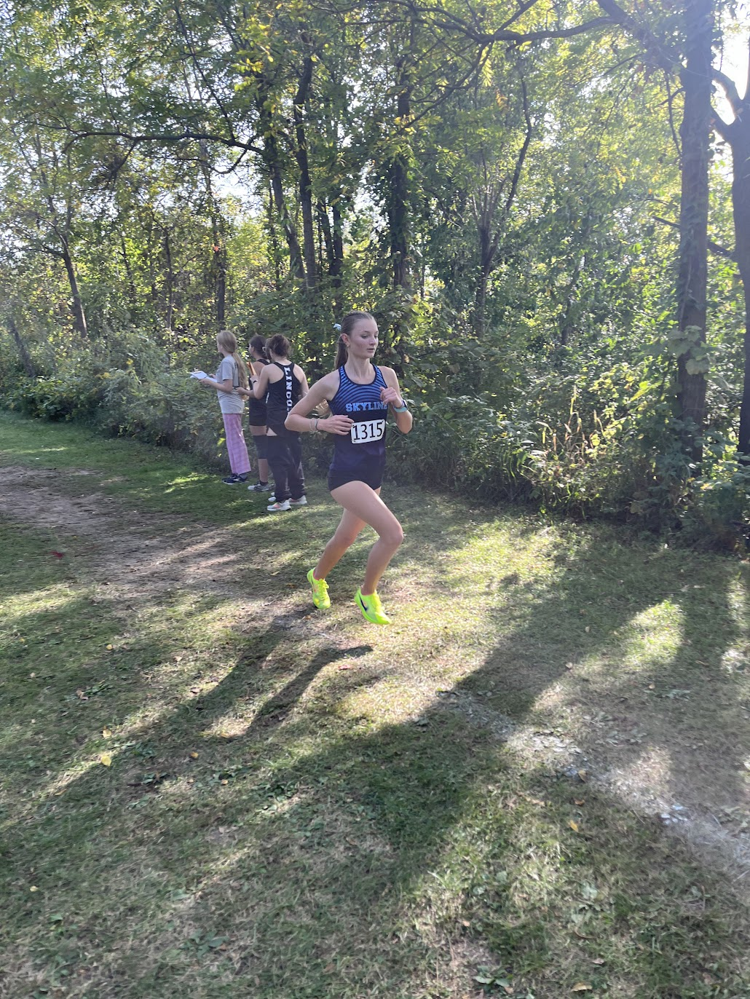

Race Summary
Ann Arbor Skyline’s varsity girls placed 6th overall, led by a standout performance from Lucia Llanes, who set a personal record (PR) of 19:05.20 and finished 8th overall. Following her was Irie Scrase, finishing in 20:25.80. Other key contributors included Mara Mocanu (22:31.20), Alison Kauffman (23:32.40), and Elin Tenbrink (24:09.40). The team's efforts secured them a competitive score against strong opponents.
Team Results
| Place | Team | Score |
|---|---|---|
| 1 | Ypsilanti Lincoln | 23 |
| 2 | Adrian | 33 |
| 3 | Saline | 36 |
| 4 | Ann Arbor Pioneer | 60 |
| 5 | Pinckney | 68 |
| 6 | Chelsea | 74 |
| 7 | Tecumseh | 104 |
| 8 | Ann Arbor Huron | 107 |
| 9 | Dexter | 116 |
| 10 | Ann Arbor Skyline | 143 |
| 11 | Ypsilanti Community | 161 |
| 12 | Temperance Bedford | 189 |
Individual Results

Lucia Llanes
Place
8
Time
19:05.20
Grade
9

Irie Scrase
Place
15
Time
20:25.80
Grade
10

Mara Mocanu
Place
40
Time
22:31.20
Grade
10

Alison Kauffman
Place
56
Time
23:32.40
Grade
10

Elin Tenbrink
Place
67
Time
24:09.40
Grade
9